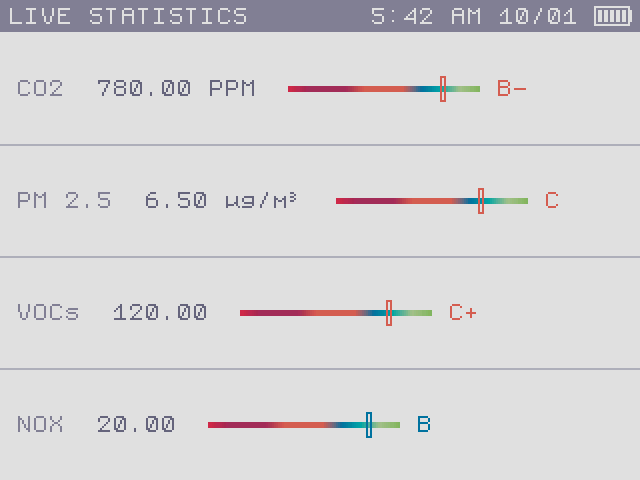
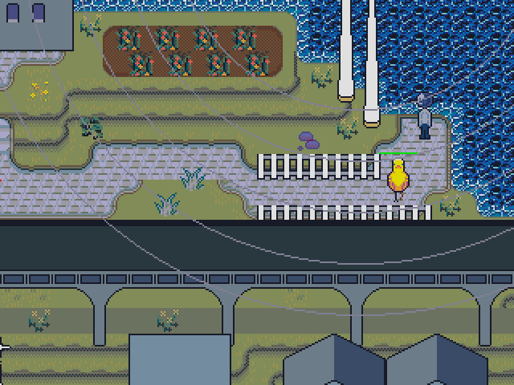
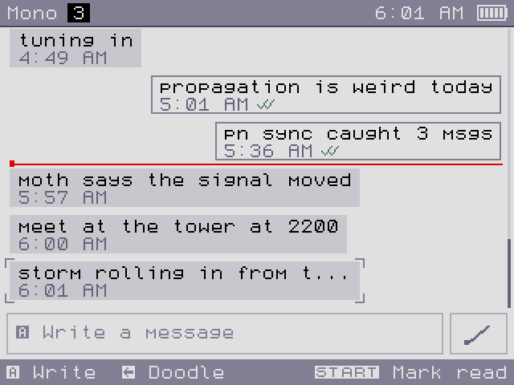
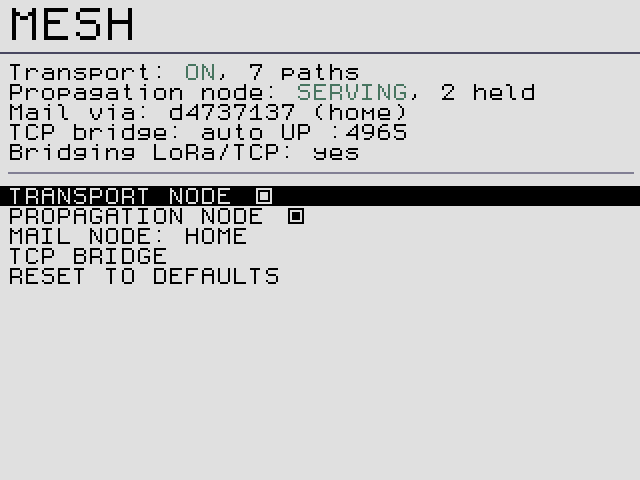
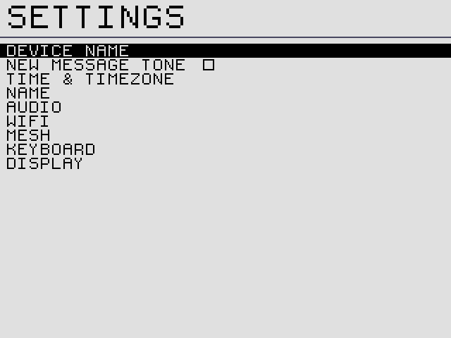
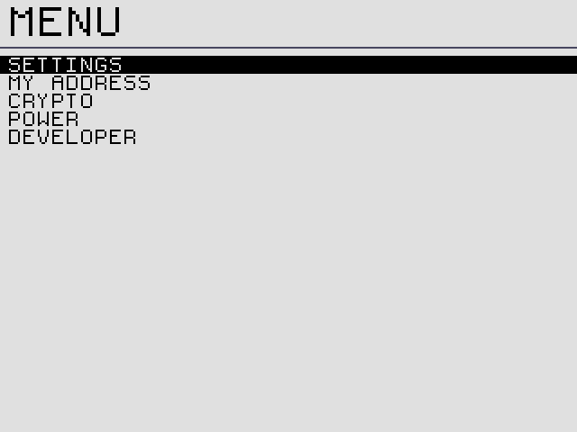

CAT owner's manual
CAT is a pocket computer with an air-quality lab, a long-range mesh messenger and a small adventure game inside.
Your CAT measures the air around you, grades it from A to F and grows a garden that reacts to it. It sends text messages and hand-drawn doodles to other CATs over LoRa radio, with no phone network needed, and can bridge to the wider Reticulum network over Wi-Fi. It can also take part in an experiment that computes fleet-wide air statistics on encrypted data.
What's on the device#

DashboardLive CO2, particles, VOC and NOx readings with an overall air grade. GardenA generated flower meadow that grows differently in clean and polluted air.
GardenA generated flower meadow that grows differently in clean and polluted air.

ExploreWake up in a cave, find a radio, meet the islanders and fight phantoms.
ChatEncrypted messages and doodles over LoRa and Reticulum. Works with Sideband and NomadNet.
Mesh and Wi-FiAn uncentralizable Reticulum mesh: relay traffic, hold mail for offline friends, bridge LoRa to the internet. Crypto: FHE and ZKEncrypted fleet air statistics, the Baochip root of trust, and anonymous ZK logins in development.
Crypto: FHE and ZKEncrypted fleet air statistics, the Baochip root of trust, and anonymous ZK logins in development.

SettingsName, time zone, display, sound, power and developer pages.
ExtrasParty lights, SD storage, the GB Emulator, Doom and USB keyboards.Quick start#
- Charge it. Plug a USB-C charger in. Plugging in also turns a sleeping CAT on. See power and charging.
- Set your time zone. The first time you reach the home screen, CAT asks where you are. Pick a region, a country and a city, then SAVE TIMEZONE. See first boot.
- Name your CAT. Settings → SETTINGS → DEVICE NAME. Other people see this name when you message them. See device name.
- Join Wi-Fi (optional). Settings → SETTINGS → WIFI → SCAN NETWORKS. With Wi-Fi your CAT reaches CATs and Reticulum users anywhere, not just within radio range. See Wi-Fi.
- Say hello. Open Chat. Nearby CATs appear on the Nearby tab when they announce themselves. Press A to save one, then open the conversation and press A to write. See Chat.
- Put it to sleep properly. CAT saves your messages and settings when you use Settings → POWER. Read why before you rely on it.
The controls in one table#
| Control | What it usually does |
|---|---|
| ▲ ▼ ◀ ▶ | Move the highlight, walk in Explore, change a value (left and right) in menus. |
| A | Open, select, confirm, talk, send. |
| B | Back, cancel, close. |
| START | Extra actions: the Manage popup in Chat, the pause overlay in Explore, accept on the keyboard. |
| SELECT | Secondary actions: announce in Chat, undo in the doodle editor, change keyboard page. |
| Touch screen | Tap tiles, menu rows, keys and buttons; draw doodles; swipe to scroll chat history. Explore does not use touch. |
Button pictures in this manual match the ones on CAT's screen: A, B, START, SELECT and the D-pad ▲ ▼ ◀ ▶. Text that appears on the screen is set like THIS.
Older devices#
Have an original µCritAir with the virtual-pet firmware? Its manual is kept as the legacy µCritAir manual.